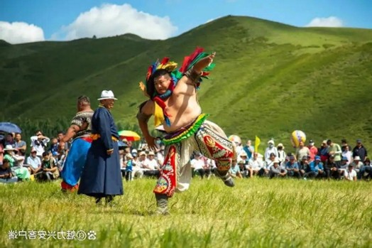
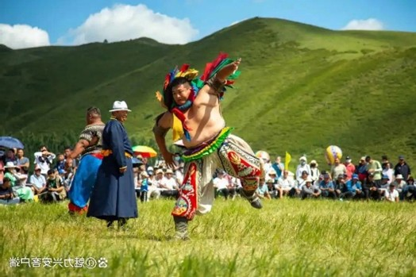
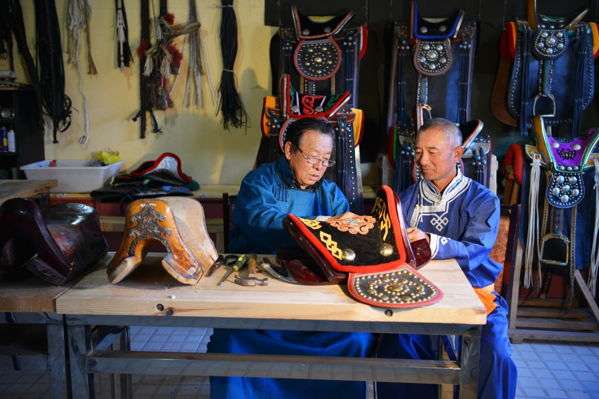
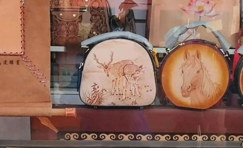
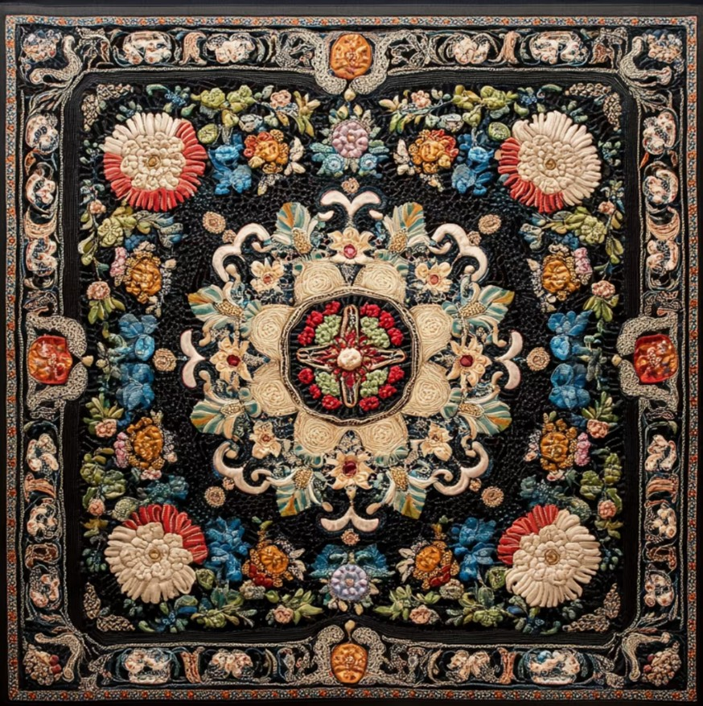
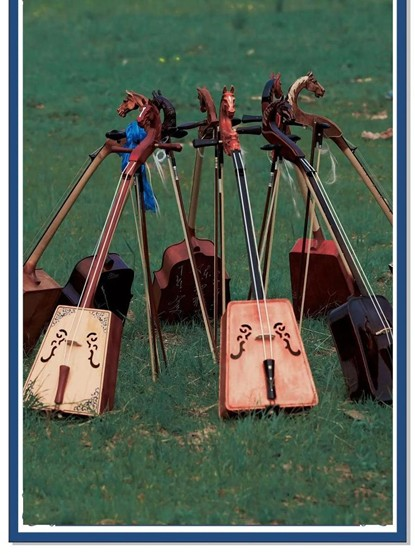

那达慕大会
那达慕大会是蒙古族历史悠久的传统节日，在蒙古族人民的生活中占有重要地位。每年七、八月牲畜肥壮的季节举行的“那达慕”大会，是人们为了庆祝丰收而举行的文体娱乐大会。那达慕大会的内容主要有摔跤、赛马、射箭、套马、下蒙古棋等民族传统项目，有的地方还有田径、拔河、篮球等体育项目，有引人入胜的歌舞。2006年5月20日，那达慕经国务院批准列入第一批国家级非物质文化遗产名录。
那达慕大会是蒙古族历史悠久的传统节日，在蒙古族人民的生活中占有重要地位。每年七、八月牲畜肥壮的季节举行的“那达慕”大会，是人们为了庆祝丰收而举行的文体娱乐大会。那达慕大会的内容主要有摔跤、赛马、射箭、套马、下蒙古棋等民族传统项目，有的地方还有田径、拔河、篮球等体育项目，有引人入胜的歌舞。2006年5月20日，那达慕经国务院批准列入第一批国家级非物质文化遗产名录。
蒙古族马具制作技艺是内蒙古自治区科尔沁左翼后旗传统技艺，已成为草原文化的重要组成部分。蒙古族马具制作综合了木工、刺绣、毛皮、编织、金属等制作工艺，制作技术精良、用料考究、使用舒适、装饰华美，特色鲜明，集中体现了蒙古族的审美意识及其民族文化特征，具有特殊的工艺价值和重要的文化研究价值。2008年6月7日，蒙古族马具制作技艺被国务院批准列入第二批国家级非物质文化遗产名录；2018年5月15日，蒙古族马具制作技艺被国家文化和旅游部、工业和信息化部列入第一批国家传统工艺振兴目录。
皮艺（蒙古族皮艺）的来源可追溯到游牧民族逐水草而居时期。皮艺（蒙古族皮艺）是独具民族特色艺术形式，在其发展历程中逐渐融入了各个时期匠人的传统技艺，经过发展和演变，皮艺（蒙古族皮艺）不仅保持了古朴韵味，也添加了许多的现代民族工艺技法。皮艺（蒙古族皮艺）也称皮雕画，是一门传统的古老技艺，是呈现游牧文化的一个缩影。最初的皮艺主要是在动物皮革上，经过雕刻、烙烫、彩绘而成，以羊皮地图、简单的装饰画为常见。2021年5月24日，皮艺（蒙古族皮艺）经中华人民共和国国务院批准列入第五批国家级非物质文化遗产名录。
蒙古族刺绣，是中国蒙古族人民在长期生产生活中形成的一种手工技艺。蒙古族刺绣不但在软面料上绣花，而且要用驼绒线、牛筋等在羊毛毡、皮靴等硬面料上刺绣。其大面料的贴花方法，粗犷匀称的针法、鲜明的对比色彩，给人以饱满充实之感。2008年，蒙古族刺绣入选中国第二批国家级非物质文化遗产目录。
马头琴是一种两弦的弦乐器，有梯形的琴身和雕刻成马头形状的琴柄，为蒙古族人民喜爱的乐器。据MaiGoo小编了解，马头琴是蒙古民族的代表性乐器，不但在中国和世界乐器家族中占有一席之地，也是民间艺人和牧民们喜欢的乐器，用马头琴所演奏的乐曲具有深沉粗犷、激昂的特点，体现了蒙古民族的生产、生活和草原风格。2006年5月20日，蒙古族马头琴音乐经国务院批准列入第一批国家级非物质文化遗产名录。
